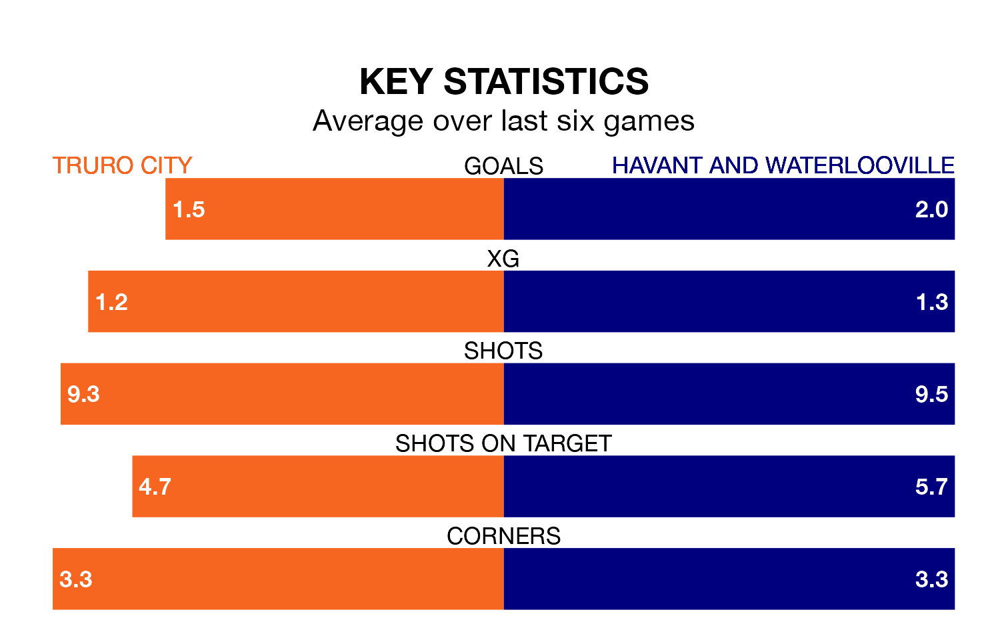

National League North and South's top two sides face each other at Manadon Sports Hub in Saturday's kick-off, when zero-placed Truro City host zero-placed Havant and Waterlooville.
Truro have picked up seven wins and four draws from 20 games so far this season, and sit 10 points above the visitors going into the 3pm match.
The Hawks, meanwhile, have won four and drawn three of 23, picking up 15 points.
With 28 goals in 23 games so far this season, Havant & Waterlooville are the league's joint--5th-lowest scorers with 1.2 goals per game. And they are conceding more than average, letting in 51 goals at a rate of 2.2 per game.
Truro, meanwhile, are above average scorers, with 1.5 goals per game, compared to a league average of 1.4. They have conceded 1.6 goals per game.
City are in mixed form in National League North and South, with three wins and three losses from their last six games.
And also with three wins and three losses over that period, the Hawks's form is identical – they have both taken nine points from 18.
Truro's last match was on December 16, a 3-2 win against Weston-super-Mare, with getting the goals for Truro.
Havant & Waterlooville beat Taunton Town 3-0 last time out, also on December 16, with on the scoresheet.
